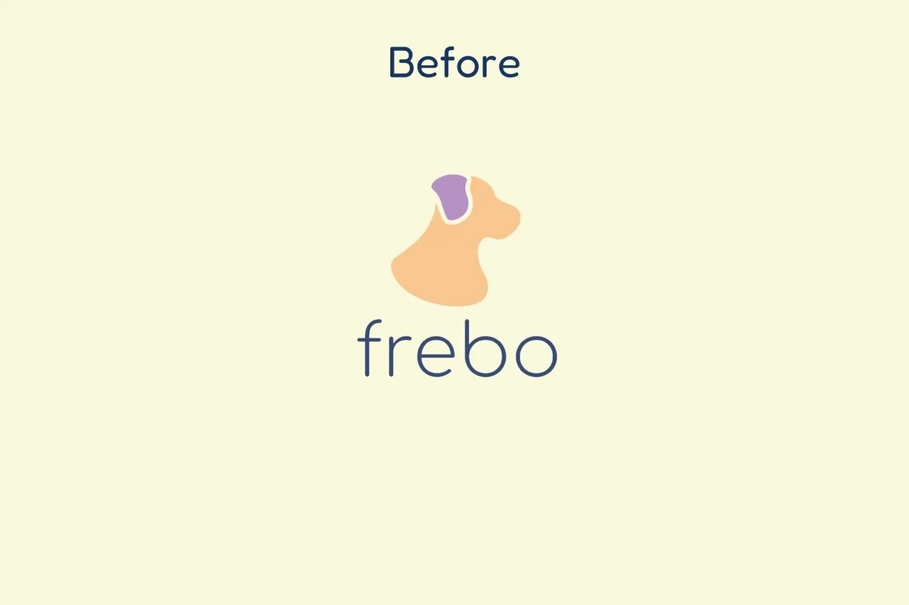
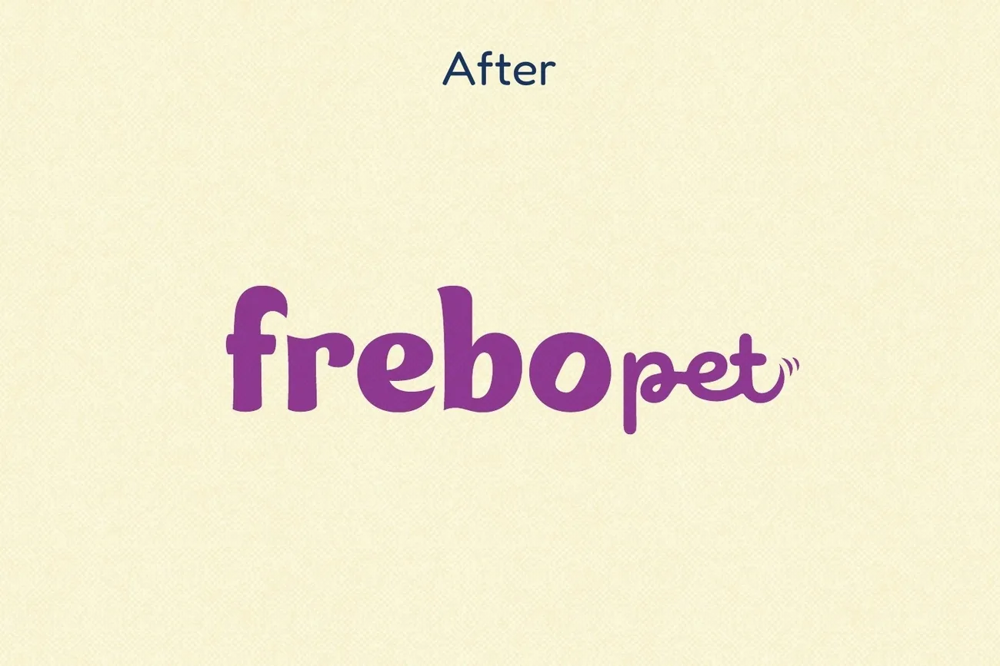

Frebo Pet
- Client
- Frebo Pet
- Year
- 2023–2026
- Project
- Brand Design, Trade Show & Social Media
- What’s included
- Logo, Color palette, Typography, Illustrations, Patterns, Social media, Trade show stand, Catalog, Flyers, Shark Tank posters
Frebo Pet
Frebo began when its founder, then a veterinary student, couldn't get the family dog to take medicine and kept hearing the same complaint from pet parents at the vet. The answer was MedSnack, a treat with a little pocket that hides the pill. CrockSnack, a line of 100% natural dehydrated chews, came next. The products worked, but the logo felt distant and generic, and the founder had one clear wish: not to be one more pet brand.
We redrew the brand in 2024 and stayed to carry it everywhere it went after that: social media, the whole stand at Pet South America, the biggest pet fair in Latin America, and the posters on the Shark Tank Brasil stage. This is a success story, and we got to design every step of it.
The new Frebo:
The brief asked for something more refined that kept the brand friendly and fun. So we drew a round, hand-lettered logo that smiles back at you, with a few secrets inside: an ear on the r, a smile on the e, a little pill inside the o (a nod to MedSnack), and a snout and a wagging tail closing the word pet.
Around it, a warm and playful palette of purple, lilac, orange, peach, mint and navy over a soft cream. Fredoka keeps everything easy to read, and Good Dog New brings the personality to the headlines.



A whole pack of characters:
We drew more than twenty dogs and cats in every mood a pet has: stretching, sleeping, belly up, sniffing around, begging for a treat. They became the pattern and the stickers, and they show up on every piece, right next to real photos of real pets. They went on to the tote bags, the T-shirts and the shipping boxes, and when Frebo launched NutriLove in 2025, the line came out with the same characters and colors.


Every week on Instagram:
Short sentences about real life with a pet, with the same grain, the same purple and the same sense of humor, so you know it's Frebo before you read the handle. Carousels, stories, launches, giveaways, Black Frebo, birthday campaigns, Easter, Mother's Day. The account went from about 6,000 followers to 16,695, almost three times the size.


Pet South America, August 2024:
The brand walked off the screen and into the biggest pet fair in Latin America, at stand H36 in São Paulo. We did the whole stand: the walls, the TV screen, the prize wheel and the counter display, plus the catalog, flyers, business cards, bags, team shirts and the posts inviting everyone to stop by.
Later, Frebo told the story in its own words: they knew it was big, but they didn't imagine how much it would change their path. The fair brought a stronger brand, feedback, retail partners and a lot of new customers.


Shark Tank Brasil:
Then came television. We designed the posters for the pitch, and they were used right there on the stage, on easels behind the Frebo team, next to the products and the purple screen with the new logo. One of our dogs was there too, cut out at giant size.
In the episode that aired on September 23, 2024, shark Carol Paiffer invested in Frebo, and Exame covered it. On social we built the whole wave around the episode: the teasers, the "it's today" posts and the SHARK15 coupon, so everyone who ran to Instagram after the show found a brand ready to welcome them.


Where it landed:
Products in every state in Brazil, a partnership with Petlove, a stand at the biggest fair in the region, an investment on national TV and almost three times the followers. A brand doesn't do that alone, of course (the Frebo team works hard!), but it was a joy to give them a look that could keep up.